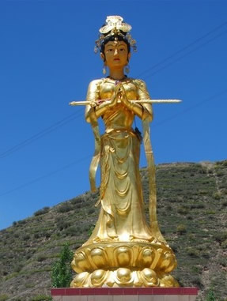

昆仑史曲 第二次天地大戰
一，八妙出关，遍地佛兵
罗地在大定中。这一定不知定了多少年。世间一切，全然不知。 那是大约一万五千年前。大日如来坐镇宙心，观音妙善继续开辟西方极乐世界。而其余八妙各率自己的战团冲杀下来。三界内顿时一片大乱，各地的大罗刹女们虽然纷纷举兵迎战，但群龙无首，难以抵挡这雷霆万钧的攻势，死伤惨重，节节败退。
战无不胜的西洋女王妙生，人称大威大势大慧大光明，率领宙心金毛狮子战团、也称金发女战团先后攻占了北欧，西欧，南欧，东欧。在奥林匹斯山建立了大本营。 接着又向东进军，占领了地中海以北以西。因为在波斯地区遭到了顽强的抗击，就回兵北上。越乌拉尔山、贝加尔湖，又向南横扫西伯利亚、新疆直打到昆仑山。再沿黄河而下，与东北杀来的战团会合于泰山以东，并向南推进到东海、南洋。

勇猛正义的东洋女王九天玄女，率天龙军团攻下了印度、西藏。但因驻守这两个地方的都是罗刹战团中最精锐的部队，所以久攻不克，伤亡惨重。攻下后，正欲挥师北上，此时才知道西洋女王已经打到了东海。
罗地干布出定了。洞口不见了釋佛。他纵身来到世界屋脊，但见遍地佛兵，茫茫万里，刀光剑影，哀鸿遍野，物是人非。
| 上 一 頁 | 下 一 頁 | 回 主 頁 |